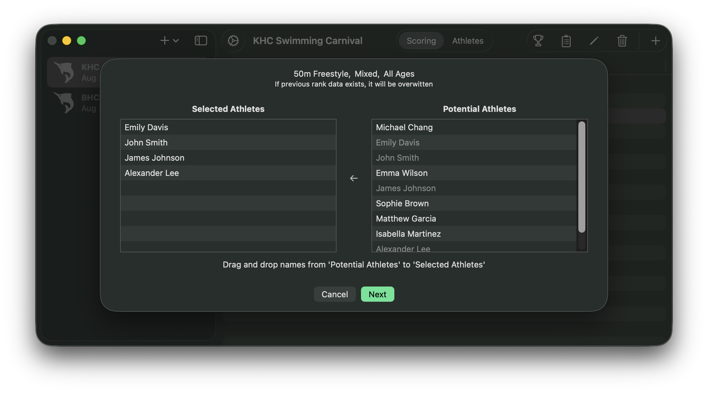
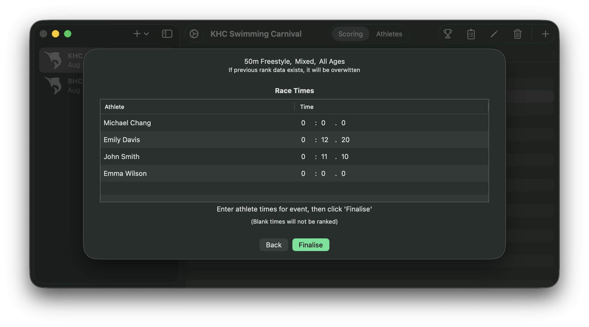
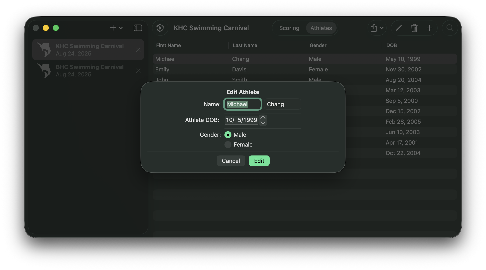
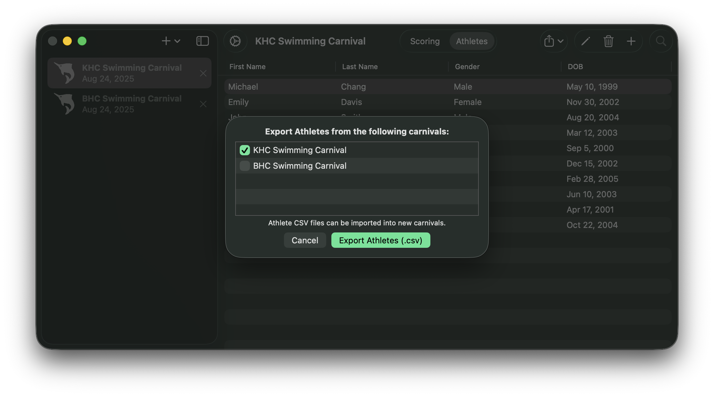

Introduction
Sashimi provides an interface to record, track, and export race scoring data for time-based sporting events, such as a school Swimming Carnival. Sashimi streamlines the process of selecting and ranking candidates in a race, with support for editing several meets (Carnivals) at once.
Use the headings in the sidebar to navigate the User Guide.
What's new in Version Beta 0.1
Structure
A carnival is a collection of events and athletes, both of which contain their own attributes.
For information on how to manage carnivals and their contents, see the relevant categories in the sidebar.
Main Interface
You will first be presented with a blank window and sidebar.
Carnival Sidebar
The carnival sidebar may be opened and closed using the sidebar icon.
To Add a new carnival, select '+'. You will be presented with a menu:
Once a carnival has been created or opened, it will be displayed in the sidebar. You may switch between open carnivals at any time.
Carnival Settings
Main Screen
Once a carnival has been selected the following interface will be presented. Close the sidebar to expand this view.

For more information on this interface, see 'Scoring' and 'Athletes' in the sidebar.
Scoring
Toolbar
Scoring Events
Before you can score an event, you will need athletes that are eligible for the event's criterea. Once this has been met, you may score an event by either using the context menu, the 'clipboard' icon in the toolbar, or by simply double-clicking the event. You will be presented with the following screen:
Athlete Selection:
This screen is divided into two lists:
Sashimi returns a list of the potential athletes for the race, given the criteria. To add them to the race, simply 'drag and drop' their names into selected athletes. To remove them, drag them back to Potential Athletes.
Once athletes have been selected, click 'next' to continue to the next page...
Race Times
You must input the race times for the selected athletes. Simply type in the Minutes, Seconds, and Milliseconds of their score. Note: You may press the tab key to quickly switch between cells. Note 2: Untimed athletes will not be scored and will instead be ignored.
Click Finalise to Submit scores
Viewing Ranks
Events that have been scored will display 'Scored' next to their names. To view their ranks, you may either use the Context Menu or Trophy icon in the Toolbar.

Rescoring Events
It is possible to re-score an event. To do this, simply click Score Event again as you would with an unscored event. Note: This will clear previous score data.
Exporting Ranks
Ranks may be exported as a plain text file, which may be simply printed or modified using a Word Processor. To do this, click 'Export' on the ranks screen and the system will provide a panel to sae the file to a location of your choosing.
Creating a New Event
To create a new event, click the '+' button in the toolbar.
An event will require a name and optionally an age group. (You can tick/untick the option for age group). You must then select for each gender you'd like to create an event for. For example, selecting 'Male' and 'Female' will create two respective events.
Selecting 'Reopen the dialogue after creation' will instantly bring up the creation interface immediately after the event is created. This will allow you to quickly create multiple events without introduction.
Editing an Event
To edit an event, use the context menu or choose the pencil icon in the toolbar.
Note: Editing an event that has been scored will not remove or modify its score data. You must rescore the event yourself if needed.
Deleting an Event
To remove an event, use the context menu or the trash icon in the toolbar. Doing so will invoke an alert to confirm this action. Note: deleting an event is permanent and lost data may not be restored.
Athletes
Toolbar
Creating an Athlete
To create a new athlete, use the '+' button in the toolbar.
You will be prompted to enter a First Name, Last Name (optional), Gender, and Birthdate.
Selecting 'Reopen this dialogue after creation' will immediately invoke another dialogue once the Athlete has been created, allowing you to quickly create athletes without interuption.
Editing an Athlete
To edit an athlete, simply select the pencil in the Toolbar, use the context menu, or simply double-click the Athlete
Deleting an Athlete
You may use the context menu, or the trash icon in the toolbar, to remove an athlete. An alert will be displayed confirming this. Note: Deleted data may never be recovered.
Importing and Exporting
Use the Import/Export Menu in the toolbar to upload or export Athletes. This is done using .CSV spreadsheets.
.CSV Files
A valid CSV file containing athlete data looks like this:
| Michael | Chang | 1999-05-10 | male |
| Emily | Davis | 2002-11-30 | female |
| John | Smith | 2004-08-20 | male |
| Emma | Wilson | 2003-03-12 | female |
| James | Johnson | 2000-09-05 | male |
There should be no headings in the table. For reference, the data is categorised as follows:
"First Name", "Last Name", "Birthdate", "Gender"
Importing Athletes from a .CSV
Click 'Import Athletes (.csv)' and the system will display a window to select the .csv file. Open the file to import all the athletes from it. Note: A list of errors may be displayed if there's an issue with your csv, but valid athletes will always be entered.'
Exporting Athletes into a .CSV
When you click 'Export Athletes (.csv)', the following menu will appear:
Select all the carnivals you'd like to export from and Sashimi will group all these athletes into a single .csv file. Note: Carnivals without Athletes will be greyed out.
You will be presented with a system window to select the Save File location.